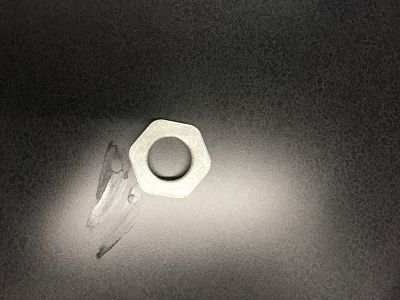

On the 5th rotation, we learnt how to use the 3D printing machine as well as its associated softwares and devices such as but not limitted to: MeshMixer, MakerBot, 3D Scanning Technology,... For the first assignment, I combined two .stl files and print the final product of this combination. One .stl file is the scanned image of my head, and the other was the design of one of my favorite game's charecters. In order to obtain the .stl file of my head, I used the 3D Scanning Technology, which was installed in a tablet. I sat still, and my teacher held the machine and circulated around my head. Once the image was obtained, I transferred it from the table to my computer. To combine the two designs, I used MeshMixer. I first downloaded the design of the character on Thingiverse, and erased the head part using MeshMixer. Then I combined the design of my head with the character's design. Once I completed the combination, I exported it to the MakerBot software and prepared it for printing. I faced one major difficulty during the process of printing, which was the supports. As the 3D printer cannot spilled melted plastic into the air, there must be supports on the objects in order to maintain its shape. I had to reprint the object for 4 times, as I forgot to place support on the object. Eventually, after placing supports, the product came out satisfactorily. 
For the second assignment, I designed and printed an object that cannot be made subtractively. For the sake of simplicity, I designed a hex-nut using AutoDesk Fusion 360. Then, I transferred the design to MeshMixer and then exported to the MakerBot software. Finally, I printed the product. This assignment is quite straightfoward, and thus, I faced no difficulties during the process.

For the lst assignment, I designed a useful object that can be printed using the 3D printer. I designed a headphone holder that hasthe shape of a skull. Then, I transferred my design to Meshmixer, and after a few adjustments, I imported it to the MakerBot app and printed the product.
Back to Index